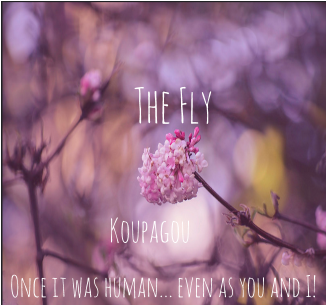

Challenge: Design a Band
Challenge Information
Design thinking is buliding up your creatvity not just art, but also with your mind. In which, you will be empathized what you will see in creativity. Empathized means the ability to imagine what someone else might be thinking or feeling in the process of creative thinking. We are studying about design thinking because we want to be able to know how creativity work in the real world. The steps to design think is to first, creatively, you can do that by go off to the outside world, like exploring the world that had life had offer us. Opening your ideas to the world, you can do that by sharing ideas or showing off your creative skills. Finding art anywhere you go can lead to big creative minds. The steps that we did in class to make the album cover is by looking over some example to art design to become inspired by the work that they did. We learned that design thinking doesn’t just come out of nowhere, we would have to look for it with our creative minds. We learned that art can be create for yourself and also create with other people in mind. This album cover was made by images what was inspired by the quote which was randomly chosen. This cover was the decided mostly the rose because it seems to like the fonts and the background over which relates/matches to my concept well according to the data table, however, one thorn is that it was too simple. We use A-B testing and Rose, Thorn, and Bud testing result to determine their strengths and weakness to their art. Rose represents the strengths, thorns represents the weakness, and the bud represents ideas after you look at it.
Album Cover
Band Biography
The concept of this band is to reach out to people with the album "The Fly" represents not only the animals who can fly, however, it is also representing about the people who can chase after their dreams and who can become inspired by Koupagou’s music. My band members contains 6 members and their names are Crystalyn, Hope, Camilla, Iris, Hailey, and Alyssa. Their music is mixed with pop music. They formed in 2013 and met in a high school in 2011 where they were in a prestigious music school studying to becoming a composer or an idol. Crystalyn is specialized in guitar and vocalists, Hope specialized in violin, Camilla specialized in piano and vocalist, Hailey specialized in drums, Iris specialized in electric and acoustic guitar and Alyssa specialized in composing music. Crystalyn, Hope, and Camilla are placed in Class A, while Iris, Hailey, and Alyssa are placed in Class B. They met while they were supposed to do an assignment relating to Class A and B working together. While Alyssa was paired up with Crystalyn, Alyssa was worried because she doesn’t have much musical experience, however, she did play the piano in the past, but is very stage fright. Sooner or later, their assignment is to get in groups and compose and sing a song to the opening ceremony. That’s when Crystalyn and Alyssa performed their song in the music room, while Hope, Camillia, Iris, and Hailey overheard them played. They were all chosen to performed in the opening ceremony and realized that they were met to performed together. They were very impress with their song and that’s when they decided to become friends and began to formed their band. In 2013 they were reached out by Platinum Entertainment and began their dream as an idol.